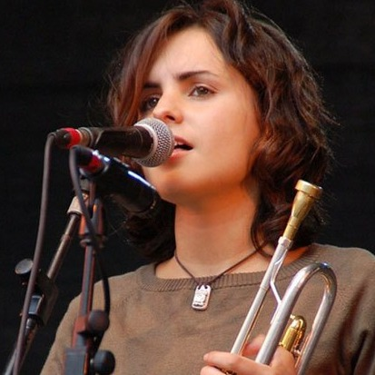
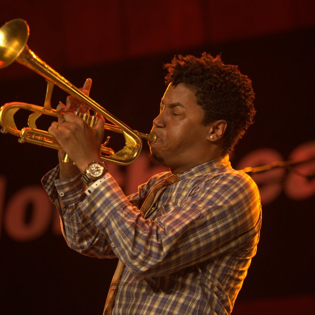
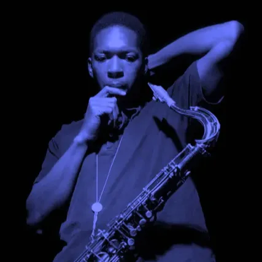
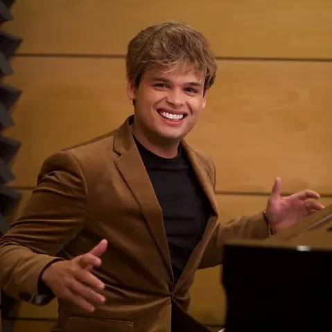

BIENVENIDOS A NUESTRO ESTUDIO
En el vibrante corazón de la Ciudad de Orizaba, Veracruz, se alza Artis Multimedia, un estudio de grabación musical que encarna la esencia de la excelencia profesional. Bajo la dirección del talentoso ingeniero Ivan Osorio, este oasis sonoro se erige como un faro de creatividad y perfección técnica. La reputación de Artis Multimedia como un bastión de profesionalismo y calidad es un legado que el ingeniero Ivan Osorio ha cultivado con esmero. Su liderazgo visionario y su compromiso con la excelencia han convertido a este estudio en un referente indiscutible en la escena musical de Orizaba y más allá.
Increíbles instalaciones
Espacios amplios
Personal de alto nivel
Contamos con el trabajo y la colaboración de artistas de Clase Mundial
Jacob Collier
Dua Lipa
Bruno Mars

Andrea Motis

Christian Scott

John Coltrane
